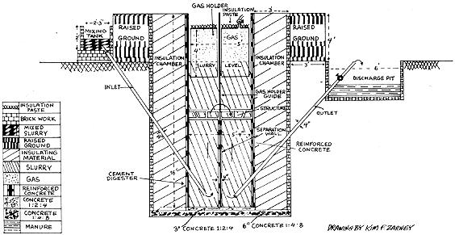

These instructions are for an underground, single-.stage, double-chamber plant designed to digest 100 pounds of manure every 24 hours - five cows' worth - but may be scaled upward to construct a plant capable of producing 500 feet of gas a day. This plan comes from "Gobar Gas: Methane Experiments in India."
Dig a hole 13 feet deep and 12 feet in diameter, cutting away trenches for the inlet and outlet pipes to angle down through.
In the center of the hole, pour a slab of concrete six inches thick and six feet in diameter. The composition of the concrete should be 1 part cement, 4 parts sand and 8 parts of 1" stone aggregate.
The digester will be built on this base from 1:2:4 concrete using 1/2" aggregate. The floor and walls will be 3" thick, giving an inside diameter of 5'6". The walls will be 16' high and reinforced with eight 3/8" machine steel vertical rods and 15 horizontal rings of the same material.
Inlet and outlet pipes of 4" galvanized iron should be positioned before pouring the walls so that the pipes are positioned 1-1/2' above the digester floor and in from the walls. This is so that when the dividing wall is built across the center of the digester, each pipe will be centered in its chamber. The concrete must be tightly packed around the pipes to prevent leakage.
Another wall of brick or concrete will be built three feet outside the digester wall and to the same height (i.e. four feet above ground level). This space will be filled with an insulating material: straw, sawdust, shavings, etc.
Provide some means of descending into this space - perhaps rungs of machine steel rod extending from the digester wall to the brick retaining wall - in case it should ever become necessary to empty the insulation. Seal the top of this area to prevent water from getting in, and leave bare earth in the bottom for drainage.
Bisecting the digester will be a wall of 4" reinforced concrete eight feet high, at the top of which an iron support structure with a guide pipe for the gas collector will be placed. This structure is made of angle iron and the guide pipe is eight feet of 3" galvanized iron pipe. The structure will be set in the digester walls and solidly fixed atop the chamber-dividing wall. The pipe must be in the exact center of the digester, allowing the gas collector to descend into the slurry when empty and rise to ground level when full. This requires 4' of vertical travel, thus the top eight feet of the digester are left for the gas collector while the bottom eight feet contain the dividing wall.
The gas collector is a roofed cylinder five feet in diameter and four feet high constructed of 12-gauge machine steel sheeting. It is braced internally with angle irons fitted at different heights so that when the collector is rotated around its guide pipe the scum on the surface of the slurry will be broken. The cylinder will first be riveted, welded, tested for leaks by filling with water and finish-welded. After all leaks are sealed it should be given two coats of enamel paint inside and out. The top will be covered with an insulating material.
The top of the gas collector is also fitted with a 1" tap and valve, and to this is connected a flexible pipe leading to your gas appliances. Inside the tap a piece of wire mesh is attached to serve as a flame arrester. The actual capacity of the gas holder is less than 100 cubic feet, but if the gas is being used regularly there's no need to make it larger.
The mixing tank is a cylinder 2'4" in diameter and two feet high. Its floor is one foot above ground level to provide hydraulic head to feed the plant. The inlet pipe opening is flush with the bottom of the mixing tank and is covered with a coarse screen to prevent large pieces of waste from being ingested. The tank may be built of bricks or concrete and is about 8-1/2 cubic feet in volume, sufficient for the daily charge of waste matter.
The discharge pit should be large enough to accommodate all the spent slurry that is expected to accumulate at a time. It's made of bricks or concrete and the discharge end of the outlet pipe should be just even with ground level.
An earth walkway at least three feet wide and level with the top of the plant should be raised outside the brick wall for support and additional insulation.
Approximate cost of materials for this plant in the United States is $400 (1971).
|
 |
|
|